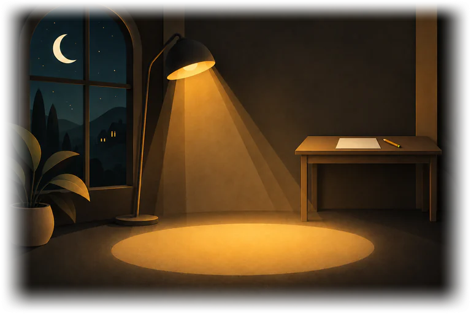
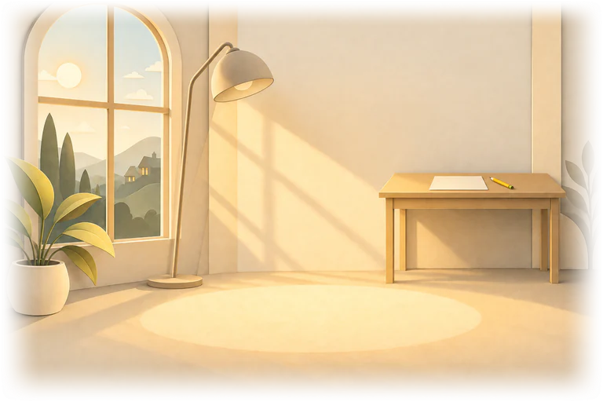
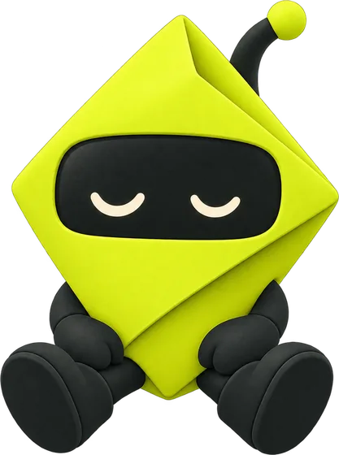
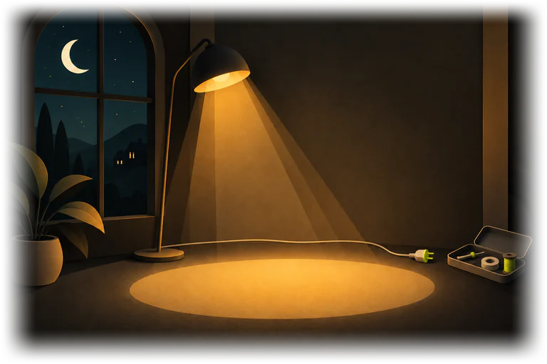
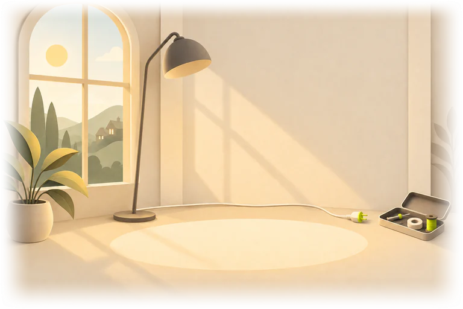

Review
Admission of a partner Your costliest chapter: 35 marks lost in Mock 3 and Mock 2. Q42 comes first.
Repair Q42A repair gives you why D looked right, the trap, one rule to keep, and a new question to check it held.
1 AI credit. You have 40. No charge if the repair cannot be written.
Practise 10 on this chapter insteadAdmission of a partner Your costliest chapter: 35 marks lost in Mock 3 and Mock 2.
Practise 10 on this chapterRepairs use AI credits. You have 0. They renew on 1 Nov.
Uses 10 practice credits. You have 140.
See your AI credits6 of the 7 checks held. Q17 slipped tonight, so it is open again and back in Revise tomorrow, Sun 18 Oct.
Also in Review
22 open mistakes
Costliest first
With 8 left blank, they cost you 172 marks across 3 papers. A wrong answer costs 6 marks, a blank 5.
-
42Goodwill brought in cash by the new partner is credited to…Mock 3, 16 Oct, 9:40 PM. You picked D
The answer stays hidden until you ask. Try it again first, or see the correct answer and the book explanation. Both are free.
38B is admitted for a 1/5 share. The sacrificing ratio of A and C is…Mock 3, 16 Oct, 9:40 PMRepair45On admission, a revaluation profit is credited to…Mock 3, 16 Oct, 9:40 PMRepair11Premium for goodwill paid privately to the old partners is…Mock 2, 12 Oct, 10:42 PMRepair17Hidden goodwill when the new partner's capital is given…Mock 2, 12 Oct, 10:42 PM. Repaired 13 Oct, opens free. Back in Revise tomorrowSlipped on a new question47Partners' capitals adjusted on the basis of the new partner's capital…Mock 3, 16 Oct, 9:40 PM. Left blank, not a mistakeTry it again, freeShow 2 more: Q6 and Q21, both held on a new question
Review
Accountancy mocks
Marks out of 250
140 in Mock 2, 12 Oct. Up 18 marks. A trend line appears from your third mock.
You changed 7 answers; 3 were right before you changed them. From your answer times in Mock 2 and Mock 3.
Your 3 papers
Newest first
 Mock 3, Accountancy158of 250
Mock 3, Accountancy158of 250
 Quick practice, Business Studies32of 50
Mock 2, Accountancy140of 250
Quick practice, Business Studies32of 50
Mock 2, Accountancy140of 250
Across your papers
Review



Your mistakes gather here
Every wrong answer lands here with its paper and time, priced in marks.
About 10 minutes, Accountancy. Free on your plan.
Review



Your mistakes did not load
Our server did not answer in time. Your papers and repairs are safe.
Try againTried at 9:41 PM.
Practise anywayRevise
8 due today, about 7 minutes.
5 questions back1 Check it held2 concept cards
3 of 8. A question you got wrongMock 2, 12 Oct, 10:42 PM. Cash flow statement
Interest received by a non-financial company is shown under which activity in a cash flow statement?
- AOperating activities
- BInvesting activities
- CFinancing activities
- DCash and cash equivalents
Free. Not counted in your marks or accuracy. A right answer sends it back in 3 days.
Concepts
Short lessons on the ideas behind your mistakes.
Goodwill and the new partner Read this next. 5 of your open mistakes are in its chapter, Admission of a partner.
Start the lesson, 9 minutesFree. Its 4 cards then join Revise, where 8 are due today.
Where you lose marks
From your papers
All Accountancy chapters
5 lessons in 4 of 12
- Not-for-profit organisationsNo lesson yet. Practice ready
- Partnership: fundamentals1 lesson
- Goodwill: nature and valuationNo lesson yet. Practice ready
- Admission of a partner−352 lessons, 1 read
- Retirement and death of a partner−291 lesson
- Dissolution of a partnership firm−22No lesson yet. Practice ready
- Issue of shares−281 lesson
- Issue of debenturesNo lesson yet. Practice ready
- Financial statements of a companyNo lesson yet. Practice ready
- Analysis of financial statementsNo lesson yet. Practice ready
- Accounting ratios−17No lesson yet. Practice ready
- Cash flow statement−23No lesson yet. Practice ready
Goodwill and the new partner
- 1Learn7 min
A short explanation, 3 worked examples, the common mistake, then quick checks with feedback.
- 2Lock it in2 min
4 cards from memory. After that they come back in Revise with your mistakes.
- 3Applyabout 10 min, separate
Back to Question 42: repair it, or practise 10 on this chapter with marks.